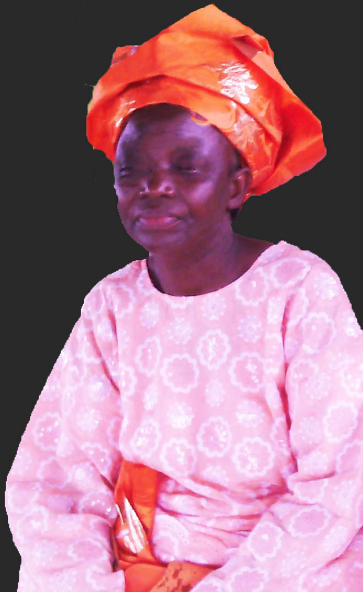

Admin's desk

I bless the name of God for the successful launching of this website which was designed to take our school to the next level in the world of ICT.
I am pleased to introduce our school to you and explain the vision for the education of our pupils. It should start a conversation and process which will see your child well supported in coming to Lord’d Heritage.
Being an educationist as well as a mother for over twenty years, I know how important school is that offers quality learning with high expectations. I am passionate and committed to maintaining the ethos and traditions of Lords Heritage, whilst ensuring the school continues to provide quality all round 21st century experiences. Our aim, that all pupils are part of 'a culture of continuous improvement' underpins our work and values for those in our care. I want all our children to fulfill their potential and promise.
 |
|---|